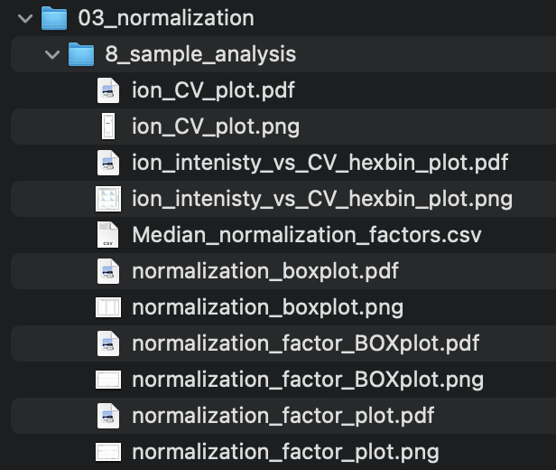
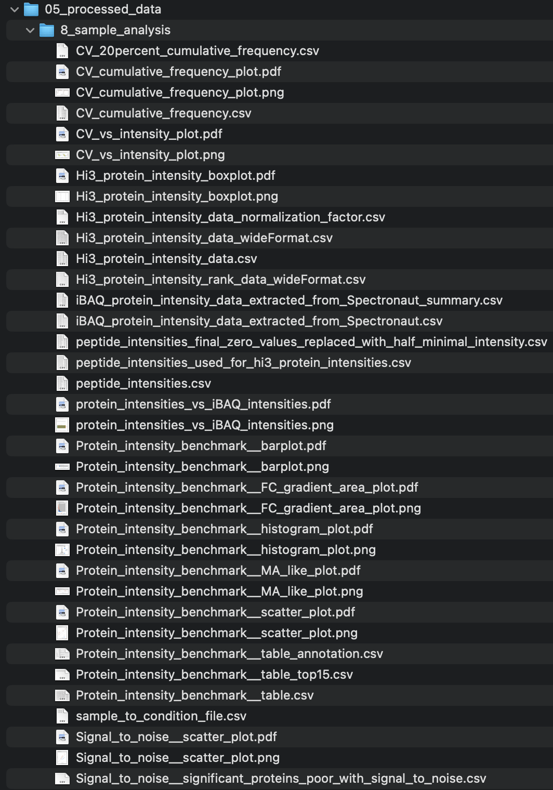
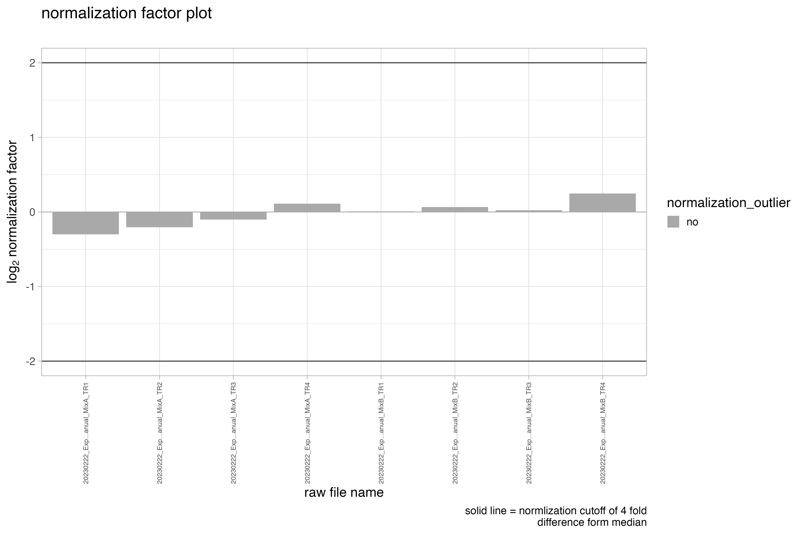
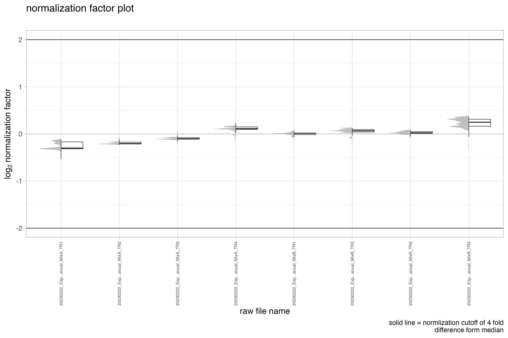
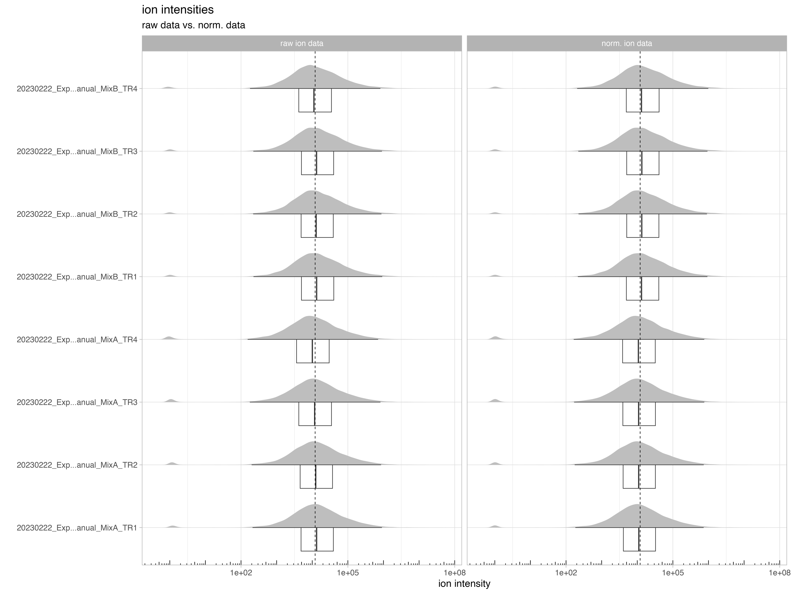
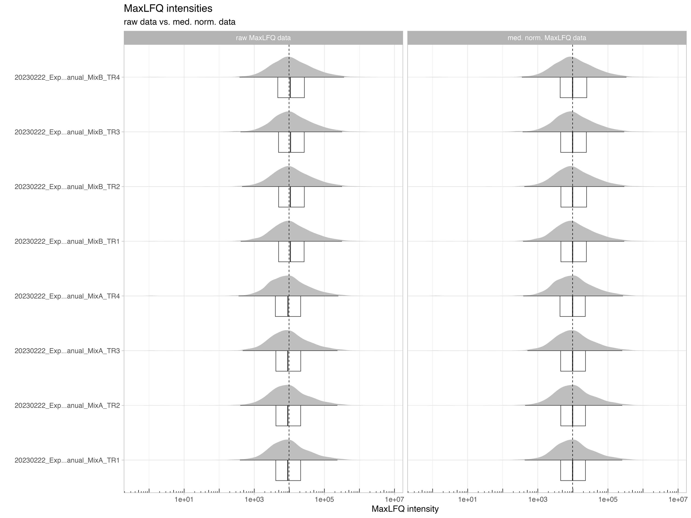
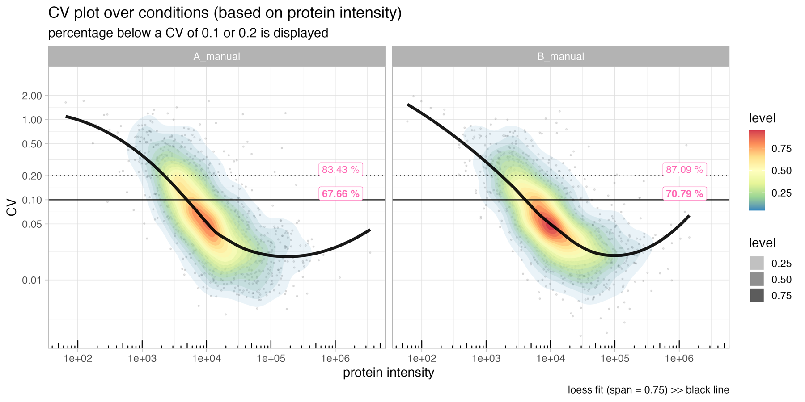
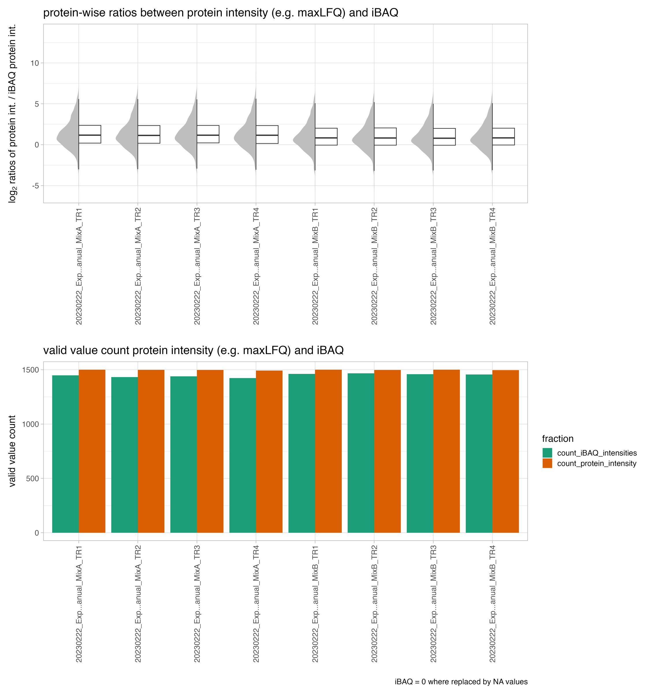
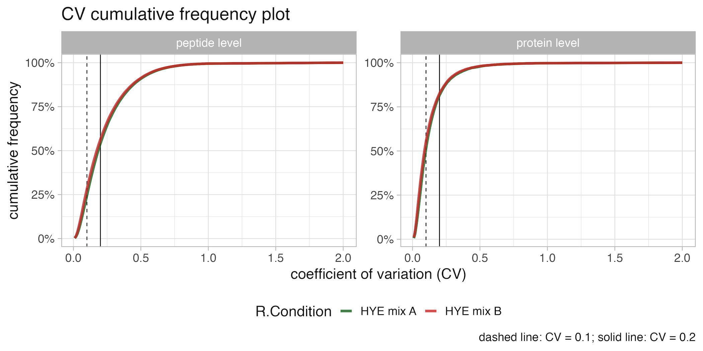

SpectroPipeR - step 2 - normalization and quantification
a02_SpectroPipeR_norm_quant.RmdSpectroPipeR - normalization and quantification module
The norm_quant_module() function serves to further
process the data from the read_spectronaut_module();
utilizes the read_spectronaut_module output:
data normalization: - normalize the ion data using the median-median normalization or auto-detect if the data was already normalized in Spectronaut using e.g. local cross-run normalization (If normalization was conducted using Spectronaut, the median-median normalization step is omitted, and the data normalized by Spectronaut is utilized.)
(optional) batch adjusting: - provides the batch adjusting functionality if needed using the ComBat methodology described in Johnson et al. 2007
(optional) covariate adjusting: - provides the covariate adjusting functionality if needed using the lm() function and the user specified meta data and formula to calculate the residuals per peptides which are back-transformed to intensities by adding the mean peptide intensity.
protein quantification: - protein quantification can be either done by Hi3 (project-wide determination of Hi3 peptides) or MaxLFQ approach (iq package)
EG.TotalQuantity (Settings) column is used for the quantification. Per default MS2 level should be selected in the quantification setting in Spectronaut™.
norm_quant_module() workflow
- load read_spectronaut_module() output
- (optional) check batch or covariate adjustment inputs
- auto-detect if normalization was done inside Spectrout, if yes use this normalization if not use median-median normalization
- calculate/ectract normalization factors
- generate plots for normalization factors/raw/normalized ion intensities
- calculate ion coefficient of variation (CV) globally and per missed cleavage
- calculate peptide intensities by summing up the ion intensities per peptide sequence
- replacing 0 peptide intensity values with the half-minimal peptide intensity value
- (optional) filter out methionine-oxidized peptides
- (optional) perform batch adjusting using ComBat; PCA of data before and after adjusting
- (optional) perform covariate adjusting of data; PCA of data before and after adjusting
- calculate protein intensity from peptide intensities (Hi3 or MaxLFQ)
- extract iBAQ intensities (optional - covariate adjustment)
- calculate protein intensity CV
- compare protein int. (Hi3 or MaxLFQ) vs. iBAQ
- calc. cumulative frequency of CV
- generate sample to condition file including measurement order
- generate plots & table outputs
background informations
coefficient of variation (CV)
coefficient of variation (CV) = standard deviation / mean
The coefficient of variation (CV) is a measure of the variability of a dataset, and it is commonly used in proteomics to assess the reproducibility of protein abundance measurements. In the given context, the CV is observed to be higher in the low abundant range of the protein intensity and lower in the mid to higher abundant range.
Several factors can influence the CV, including: sample preparation, sample type, Mass Spectrometry (MS) methodology
Hi3 protein intensity
Hi3 uses the mean over the highest 2-3 peptides per protein defined by the median over the whole dataset.
iBAQ protein intensity
The iBAQ (intensity-Based Absolute Quantification) is a method used in proteomics to estimate the relative abundance of proteins within a sample. The iBAQ value for a protein is calculated by dividing the total intensity (sum of peptide intensities) of the protein by the number of theoretically observable tryptic peptides for that protein. This normalizes the protein intensity by the number of peptides that can be detected. Schwanhäusser *et al., 2011
MaxLFQ protein intensity
MaxLFQ stands for Maximal Peptide Ratio Extraction and Label-Free Quantification. It is an algorithm used to estimate protein abundances in mass spectrometry-based proteomics by aiming to maintain the fragment intensity ratios between samples. The MaxLFQ algorithm calculates protein intensities by taking the maximum peptide ratio of all peptides that map to a protein and normalizing it across all samples.
The MaxLFQ algorithm was developed by Cox et al. in 2014 and is widely used in label-free quantitative proteomics. It is considered to be an accurate method for proteome-wide label-free quantification.
In more technical terms, the MaxLFQ algorithm calculates ratio between any two samples using the peptide species that are present. The pair-wise protein ratio is then defined as the median of the peptide ratios, to protect against outliers (require a minimal number of two peptide ratios in order for a given protein ratio to be considered valid). At this point the algorithm constructed a triangular matrix containing all pair-wise protein ratios between any two samples, which is the maximal possible quantification information. Then the algorithm perform a least-squares analysis to reconstruct the abundance profile optimally satisfying the individual protein ratios in the matrix based on the sum of squared differences. Then the algorithm rescales the whole profile to the cumulative intensity across samples, thereby preserving the total summed intensity for a protein over all samples. This procedure is repeated for all proteins, resulting in an accurate abundance profile for each protein across the samples.
Batch adjustment of data using ComBat
Batch effects refer to systematic differences between batches
(groups) of samples in high-throughput experiments. These differences
can arise due to various factors, such as batch variations in sample
preparation, handling, processing procedures and measurement orders.
Batch effects can obscure the true biological signal and lead to
incorrect conclusions if not properly accounted for. In the SpectroPipeR
pipeline, the ComBat tool was employed to adjust for batch effects in
the datasets where the batch covariate was known. ComBat utilizes the
methodology described in Johnson et
al. 2007. It uses an empirical Bayes (EB) framework for adjusting
data for batch effects that is robust to outliers in small sample sizes
and performs comparable to existing methods for large samples. Johnson et
al. 2007: This method incorporates systematic batch biases common
across genes in making adjustments, assuming that phenomena resulting in
batch effects often affect many genes in similar ways (i.e. increased
expression, higher variability, etc). Specifically, the L/S model
parameters are estimated that represent the batch effects by pooling
information across genes in each batch to shrink the batch effect
parameter estimates toward the overall mean of the batch effect
estimates (across peptides). These EB estimates are then used to adjust
the data for batch effects, providing more robust adjustments for the
batch effect on each peptide. In SpectroPipeR a parametric ComBAT
empirical Bayes adjustment is implemented by utilizing the sva-package.
After adjusting the data you may find a PCA analysis plot (Dim. 1-5) of
adjusted and un-adjusted data under 05_processed_data.
Following the adjustment of peptide data, protein intensities are then
computed.
Covariate adjustment
SpectroPipeR is capable of performing covariate adjustment on quantitative data. This adjustment is achieved by utilizing user-provided meta data and a formula. The adjustment process employs the linear model function, lm(), and it operates on the log10 transformed peptide intensity data. Once the linear model is fitted, the residuals are computed. These residuals are then adjusted back to the original quantitative range by adding the mean peptide intensity across all samples. This ensures that each peptide’s quantitative range is preserved. Following the adjustment of peptide data, protein intensities are then computed. Given that iBAQ intensities are derived from the Spectronaut report, they undergo a similar adjustment process as was applied to the peptides.
example code
norm_quant_module() needs the output of the read_spectronaut_module() !
# step 2: normalize & quantification module
SpectroPipeR_data_quant <- norm_quant_module(SpectroPipeR_data = SpectroPipeR_data)
# #*****************************************
# # NORMALIZATION & QUANTIFICATION MODULE
# #*****************************************
#
# sorting Replicates and conditions ...
# NORMALIZATION WAS DONE IN SPECTRONAUT...
# ...skipping normalization step and use Spectronaut normalized data instead...
# save Normalization factor plot ...
# save Normalization boxplot ...
# count missed cleavages ...
# save missed cleavage plots...
# generate ion CV data...
# save ion CV data plots...
# save ion CV data vs. mean intensity hexbin plots...
# calculating peptide intensity data ...
# writing peptide intensity data ...
# protein intensity calculation ...
# extracting iBAQ intensities from Spectronaut report ...
# calc. mean, SD, CV of iBAQ intensities ...
# ... save iBAQ data ...
# perform maxLFQ protein intensity calculation ... (this will take some time)
# ... preprocessing data for MaxLFQ estimation ...
# Concatenating secondary ids...
#
# Removing low intensities...
#
# ... generate protein list for MaxLFQ estimation ...
# # proteins = 1503, # samples = 8
# 5.1%
# 10%
# 15%
# 20%
# 25%
# 30%
# 35%
# 40%
# 46%
# 51%
# 56%
# 61%
# 66%
# 71%
# 76%
# 81%
# 86%
# 91%
# 96%
# Completed.
# ... calculation of MaxLFQ ...
# 5.1%
# 10%
# 15%
# 20%
# 25%
# 30%
# 35%
# 40%
# 46%
# 51%
# 56%
# 61%
# 66%
# 71%
# 76%
# 81%
# 86%
# 91%
# 96%
# Completed.
# ... generate outputs for MaxLFQ estimation ...
# ... do median normalization of maxLFQ data ...
# ... save MaxLFQ boxplot ...
# ... save MaxLFQ data ...
# ... compare protein intensities and iBAQ protein intensities ...
# ... CV plot calculation ...
# ... render CV plot ...
# _________ normalization done _________
# no outlier detected with 4 fold difference from the mediannorm_quant_module() outputs
The output in your specified output folder for the norm_quant_module() function should look like in this example (03_normalization, 05_processed_data):


normalization - figures
normalization_factor_plot
The bar chart, denoted as normalization_factor_plot, depicts the normalization factor employed for data normalization. In the event that local cross-run normalization was chosen in Spectronaut, the median of the normalization factors is exhibited. The user-defined cut-off threshold in the SpectroPipeR parameters setting is represented by the solid lines. If a run were to have a normalization factor exceeding the threshold, it would be highlighted in orange on the plot and indicated in the normalization tables.

normalization_factor_BOXplot
The boxplot/density chart, denoted as normalization_factor_BOXplot, depicts the normalization factor employed for data normalization e.g. if local cross-run normalization was chosen in Spectronaut.

normalization_boxplot
The boxplot/density chart, denoted as normalization_boxplot, depicts the raw and normalized ion intensities.

normalization - tables
Median_normalization_factors.csv
The file_list.csv table contains 4 columns and gives a brief overview of the files used in the project
- R.FileName is the capped raw file name
- R.Condition is the condition naming which was setup in your Spectronaut analysis
- R.Replicate is the replicate number which was setup in your Spectronaut analysis
- MedianNormalizationFactor is the normalization factor or in case of local cross run normalization the median of the normalization factors
- normalization_outlier indicator column for an outlier based on the normalization factor threshold the user specified in the SpectroPipeR parameters
| R.FileName | R.Condition | R.Replicate | MedianNormalizationFactor | normalization_outlier |
|---|---|---|---|---|
| 20230222_Exp…anual_MixA_TR1 | A_manual | 1 | 0.8117018 | no |
| 20230222_Exp…anual_MixA_TR2 | A_manual | 2 | 0.8680521 | no |
| 20230222_Exp…anual_MixA_TR3 | A_manual | 3 | 0.9313351 | no |
| 20230222_Exp…anual_MixA_TR4 | A_manual | 4 | 1.0809348 | no |
| 20230222_Exp…anual_MixB_TR1 | B_manual | 1 | 1.0050862 | no |
| 20230222_Exp…anual_MixB_TR2 | B_manual | 2 | 1.0473045 | no |
| 20230222_Exp…anual_MixB_TR3 | B_manual | 3 | 1.0161635 | no |
| 20230222_Exp…anual_MixB_TR4 | B_manual | 4 | 1.1874938 | no |
processed data - figures
MaxLFQ_protein_intensity_boxplot
The MaxLFQ_protein_intensity_boxplot illustrates the raw and normalized MaxLFQ protein intensities.

CV_vs_intensity_plot
The CV_vs_intensity_plot depicts the normalized protein intensity vs the coefficient of variation (CV) of the protein intensity.
The horizontal solid line in the figure indicates a CV of 0.1, while the dotted line represents a CV of 0.2. These lines serve as reference points to evaluate the variability of the protein abundance measurements.
The pink labels in the figure show the percentage of proteins that have a CV below 0.1 or 0.2, respectively, in relation to the total number of protein identifications. This information provides insights into the overall reproducibility of the protein abundance measurements within the dataset.

protein_intensities_vs_iBAQ_intensities
The protein_intensities_vs_iBAQ_intensities plot depicts the the ratios between different protein intensity estimation algorithms, such as MaxLFQ and iBAQ. This allows the user to assess the relationship and potential differences between these estimation methods.
In the upper panel the plot displays the ratios between the protein intensity estimates, providing a visual representation of the similarities or discrepancies between the different algorithms.
The lower panel of the plot includes a bar chart that shows the count or frequency of the individual protein intensity estimations.

CV_cumulative_frequency_plot
The CV_cumulative_frequency_plot graphically represents the cumulative frequency of the Coefficient of Variation (CV) at both the peptide and protein levels. On the x-axis, the coefficient of variation (CV) is plotted, while the y-axis displays the cumulative frequency. The lines are differentiated by color according to the condition. This enables the user to assess and evaluate the reproducibility of measurements across different conditions in the analysis.

processed data - tables
sample_to_condition_file.csv
The sample_to_condition_file.csv table contains the information about the run file name, condition, replicate, run date and resulting measurement order.
- R.Condition is the condition naming which was setup in your Spectronaut analysis
- R.FileName is the capped raw file name
- R.Replicate is the replicate number which was setup in your Spectronaut analysis
- R.Run Date raw file run date
- measurement_order measurement order (integer)
| R.Condition | R.FileName | R.Replicate | R.Run Date | measurement_order |
|---|---|---|---|---|
| A_manual | 20230222_Exp…anual_MixA_TR1 | 1 | 2023-02-23 02:40:34 | 1 |
| A_manual | 20230222_Exp…anual_MixA_TR2 | 2 | 2023-02-23 04:48:36 | 2 |
| A_manual | 20230222_Exp…anual_MixA_TR3 | 3 | 2023-02-23 06:56:38 | 3 |
| A_manual | 20230222_Exp…anual_MixA_TR4 | 4 | 2023-02-23 09:04:40 | 4 |
| B_manual | 20230222_Exp…anual_MixB_TR1 | 1 | 2023-02-23 11:12:43 | 5 |
| B_manual | 20230222_Exp…anual_MixB_TR2 | 2 | 2023-02-23 13:20:47 | 6 |
| B_manual | 20230222_Exp…anual_MixB_TR3 | 3 | 2023-02-23 15:28:46 | 7 |
| B_manual | 20230222_Exp…anual_MixB_TR4 | 4 | 2023-02-23 17:36:48 | 8 |
peptide_intensities.csv
The peptide_intensities.csv table contains the information about the calculated peptide intensities. Specifically, this table holds the sum of the normalized ion data for each peptide-sample combination.
- R.FileName is the capped raw file name
- R.Replicate is the replicate number which was setup in your Spectronaut analysis
- R.Condition is the condition naming which was setup in your Spectronaut analysis
- PG.ProteinGroups protein group IDs
- EG.ModifiedPeptide modified peptide sequences
- PEP.StrippedSequence stripped peptide sequences
- peptide_intensity peptide intensity
| R.FileName | R.Replicate | R.Condition | PG.ProteinGroups | EG.ModifiedPeptide | PEP.StrippedSequence | peptide_intensity |
|---|---|---|---|---|---|---|
| 20230222_Exp…anual_MixA_TR1 | 1 | A_manual | A0PJW6 | GEVPAMLPLK | GEVPAMLPLK | 12263.129 |
| 20230222_Exp…anual_MixA_TR1 | 1 | A_manual | A0PJW6 | LFDNTVGAYR | LFDNTVGAYR | 18185.355 |
| 20230222_Exp…anual_MixA_TR1 | 1 | A_manual | A1X283 | AAAASVPNADGLK | AAAASVPNADGLK | 12529.687 |
| 20230222_Exp…anual_MixA_TR1 | 1 | A_manual | A1X283 | EGWAPATFIDK | EGWAPATFIDK | 6625.379 |
| 20230222_Exp…anual_MixA_TR1 | 1 | A_manual | A1X283 | FEGRPVPDGDAK | FEGRPVPDGDAK | 3225.517 |
| 20230222_Exp…anual_MixA_TR1 | 1 | A_manual | A1X283 | LGEAAALENNTGSEATGPSRPLPDAPHGVMDSGLPWSK | LGEAAALENNTGSEATGPSRPLPDAPHGVMDSGLPWSK | 5767.410 |
| 20230222_Exp…anual_MixA_TR1 | 1 | A_manual | A1X283 | SLLDGEGPQAVGGQDVAFSR | SLLDGEGPQAVGGQDVAFSR | 2322.913 |
| 20230222_Exp…anual_MixA_TR1 | 1 | A_manual | A1X283 | SVPVPLQEAPQQR | SVPVPLQEAPQQR | 6064.211 |
| 20230222_Exp…anual_MixA_TR1 | 1 | A_manual | A1X283 | TDLPEEKPDATPQNPFLK | TDLPEEKPDATPQNPFLK | 9141.116 |
| 20230222_Exp…anual_MixA_TR1 | 1 | A_manual | A1X283 | VTWSSGSTEAIYR | VTWSSGSTEAIYR | 7835.685 |
| 20230222_Exp…anual_MixA_TR1 | 1 | A_manual | A1X283 | YTVIYPYTAR | YTVIYPYTAR | 11841.916 |
| 20230222_Exp…anual_MixA_TR1 | 1 | A_manual | A5Z2X5 | LTGNPELSSLDEVLAK | LTGNPELSSLDEVLAK | 248208.404 |
| 20230222_Exp…anual_MixA_TR1 | 1 | A_manual | L0R6Q1 | DYLQLLR | DYLQLLR | 55120.242 |
| 20230222_Exp…anual_MixA_TR1 | 1 | A_manual | L0R6Q1 | GFLAGYVVAK | GFLAGYVVAK | 40748.910 |
| 20230222_Exp…anual_MixA_TR1 | 1 | A_manual | L0R6Q1 | NQLESLQR | NQLESLQR | 37823.902 |
peptide_intensities_final.csv
The peptide_intensities_final.csv table contains the information about the calculated peptide intensities finalized by e.g. removing methionine oxidized peptides.
- R.FileName is the capped raw file name
- R.Replicate is the replicate number which was setup in your Spectronaut analysis
- R.Condition is the condition naming which was setup in your Spectronaut analysis
- PG.ProteinGroups protein group IDs
- EG.ModifiedPeptide modified peptide sequences
- PEP.StrippedSequence stripped peptide sequences
- peptide_intensity peptide intensity
| R.FileName | R.Replicate | R.Condition | PG.ProteinGroups | EG.ModifiedPeptide | PEP.StrippedSequence | peptide_intensity |
|---|---|---|---|---|---|---|
| 20230222_Exp…anual_MixA_TR1 | 1 | A_manual | A0PJW6 | GEVPAMLPLK | GEVPAMLPLK | 12263.129 |
| 20230222_Exp…anual_MixA_TR1 | 1 | A_manual | A0PJW6 | LFDNTVGAYR | LFDNTVGAYR | 18185.355 |
| 20230222_Exp…anual_MixA_TR1 | 1 | A_manual | A1X283 | AAAASVPNADGLK | AAAASVPNADGLK | 12529.687 |
| 20230222_Exp…anual_MixA_TR1 | 1 | A_manual | A1X283 | EGWAPATFIDK | EGWAPATFIDK | 6625.379 |
| 20230222_Exp…anual_MixA_TR1 | 1 | A_manual | A1X283 | FEGRPVPDGDAK | FEGRPVPDGDAK | 3225.517 |
| 20230222_Exp…anual_MixA_TR1 | 1 | A_manual | A1X283 | LGEAAALENNTGSEATGPSRPLPDAPHGVMDSGLPWSK | LGEAAALENNTGSEATGPSRPLPDAPHGVMDSGLPWSK | 5767.410 |
| 20230222_Exp…anual_MixA_TR1 | 1 | A_manual | A1X283 | SLLDGEGPQAVGGQDVAFSR | SLLDGEGPQAVGGQDVAFSR | 2322.913 |
| 20230222_Exp…anual_MixA_TR1 | 1 | A_manual | A1X283 | SVPVPLQEAPQQR | SVPVPLQEAPQQR | 6064.211 |
| 20230222_Exp…anual_MixA_TR1 | 1 | A_manual | A1X283 | TDLPEEKPDATPQNPFLK | TDLPEEKPDATPQNPFLK | 9141.116 |
| 20230222_Exp…anual_MixA_TR1 | 1 | A_manual | A1X283 | VTWSSGSTEAIYR | VTWSSGSTEAIYR | 7835.685 |
| 20230222_Exp…anual_MixA_TR1 | 1 | A_manual | A1X283 | YTVIYPYTAR | YTVIYPYTAR | 11841.916 |
| 20230222_Exp…anual_MixA_TR1 | 1 | A_manual | A5Z2X5 | LTGNPELSSLDEVLAK | LTGNPELSSLDEVLAK | 248208.404 |
| 20230222_Exp…anual_MixA_TR1 | 1 | A_manual | L0R6Q1 | DYLQLLR | DYLQLLR | 55120.242 |
| 20230222_Exp…anual_MixA_TR1 | 1 | A_manual | L0R6Q1 | GFLAGYVVAK | GFLAGYVVAK | 40748.910 |
| 20230222_Exp…anual_MixA_TR1 | 1 | A_manual | L0R6Q1 | NQLESLQR | NQLESLQR | 37823.902 |
iBAQ_protein_intensity_data_extracted_from_Spectronaut.csv
The iBAQ_protein_intensity_data_extracted_from_Spectronaut.csv table contains the information about the calculated peptide intensities finalized by e.g. removing methionine oxidized peptides.
- R.FileName is the capped raw file name
- R.Condition is the condition naming which was setup in your Spectronaut analysis
- R.Replicate is the replicate number which was setup in your Spectronaut analysis
- PG.ProteinGroups protein group IDs
- iBAQ_intensities SpectroPipeR extracted iBAQ intensities
- PG.IBAQ_raw Spectronaut iBAQ calculations
Since a protein group can contain more than one protein the number of theoretical peptides may differ. Therefore Spectronaut separates with a “;” e.g. “6179.5;6376.5” (iBAQ intensities from Spectronaut = PG.IBAQ_raw). SpectroPipeR uses the mean of the iBAQ values to give an iBAQ estimate for the protein group as well (iBAQ_intensities).
| R.FileName | R.Condition | R.Replicate | PG.ProteinGroups | iBAQ_intensities | PG.IBAQ_raw |
|---|---|---|---|---|---|
| 20230222_Exp…anual_MixA_TR1 | A_manual | 1 | A0PJW6 | 2537.4 | 2537.4 |
| 20230222_Exp…anual_MixA_TR1 | A_manual | 1 | A1X283 | 1361.5 | 1361.5 |
| 20230222_Exp…anual_MixA_TR1 | A_manual | 1 | A5Z2X5 | 82736.1 | 82736.1 |
| 20230222_Exp…anual_MixA_TR1 | A_manual | 1 | L0R6Q1 | 33003.4 | 33003.4 |
| 20230222_Exp…anual_MixA_TR1 | A_manual | 1 | L0R8F8 | 2669.7 | 2669.7 |
| 20230222_Exp…anual_MixA_TR1 | A_manual | 1 | O00330 | 4721.1 | 4721.1 |
| 20230222_Exp…anual_MixA_TR1 | A_manual | 1 | O00458 | 121.3 | 121.3 |
| 20230222_Exp…anual_MixA_TR1 | A_manual | 1 | O00487 | 31489.5 | 31489.5 |
| 20230222_Exp…anual_MixA_TR1 | A_manual | 1 | O00571 | 117313.4 | 117313.4 |
| 20230222_Exp…anual_MixA_TR1 | A_manual | 1 | O00622 | 3771.2 | 3771.2 |
| 20230222_Exp…anual_MixA_TR1 | A_manual | 1 | O13516 | 277582.3 | 277582.3 |
| 20230222_Exp…anual_MixA_TR1 | A_manual | 1 | O13547 | 1905.0 | 1905 |
| 20230222_Exp…anual_MixA_TR1 | A_manual | 1 | O14521 | 6462.5 | 6462.5 |
| 20230222_Exp…anual_MixA_TR1 | A_manual | 1 | O14561 | 26804.5 | 26804.5 |
| 20230222_Exp…anual_MixA_TR1 | A_manual | 1 | O14579 | 43005.4 | 43005.4 |
| 20230222_Exp…anual_MixA_TR1 | A_manual | 1 | P21127;Q9UQ88 | 6179.5 | 6179.5;6179.5 |
iBAQ_protein_intensity_data_extracted_from_Spectronaut_summary.csv
The iBAQ_protein_intensity_data_extracted_from_Spectronaut_summary.csv table contains the information about the calculated peptide intensities finalized by e.g. removing methionine oxidized peptides.
- R.Condition is the condition naming which was setup in your Spectronaut analysis
- PG.ProteinGroups protein group IDs
- mean_iBAQ_intensities mean iBAQ intensities over replicates
- SD_iBAQ_intensities standard deviation of iBAQ intensities over replicates
- CV_iBAQ_intensities coefficient of variation of iBAQ intensities over replicates
- iBAQ_quantiles project specific iBAQ quantile calculated by using the analysis specific mean of iBAQ intensities over all runs
| R.Condition | PG.ProteinGroups | mean_iBAQ_intensities | SD_iBAQ_intensities | CV_iBAQ_intensities | iBAQ_quantiles |
|---|---|---|---|---|---|
| A_manual | A0PJW6 | 2660.450 | 204.97937 | 0.0770469 | Q5 |
| A_manual | A1X283 | 1324.475 | 59.81551 | 0.0451617 | Q4 |
| A_manual | A5Z2X5 | 78088.275 | 3575.86724 | 0.0457926 | Q9 |
| A_manual | L0R6Q1 | 31907.450 | 1404.82917 | 0.0440282 | Q9 |
| A_manual | L0R8F8 | 2966.800 | 633.34122 | 0.2134762 | Q5 |
| A_manual | O00330 | 4884.950 | 228.75335 | 0.0468282 | Q6 |
| A_manual | O00458 | 150.875 | 19.88540 | 0.1318005 | Q1 |
| A_manual | O00487 | 32368.550 | 741.58758 | 0.0229107 | Q9 |
| A_manual | O00571 | 112171.575 | 6540.49731 | 0.0583080 | Q10 |
| A_manual | O00622 | 3548.625 | 182.64097 | 0.0514681 | Q5 |
| A_manual | O13516 | 251255.500 | 17827.74390 | 0.0709546 | Q10 |
| A_manual | O13547 | 1873.825 | 187.98415 | 0.1003211 | Q4 |
| A_manual | O14521 | 6567.325 | 183.61005 | 0.0279581 | Q6 |
| A_manual | O14561 | 26587.425 | 707.79358 | 0.0266214 | Q9 |
| A_manual | O14579 | 43786.775 | 1077.65641 | 0.0246115 | Q9 |
maxLFQ_protein_intensity_data.csv
The maxLFQ_protein_intensity_data.csv table contains the information about the calculated MaxLFQ protein intensity data calculated by the iq package algorithm.
- PG.ProteinGroups protein group IDs
- R.FileName is the capped raw file name
- protein_intensity MaxLFQ intensity
- R.Condition is the condition naming which was setup in your Spectronaut analysis
- R.Replicate is the replicate number which was setup in your Spectronaut analysis
- intensity_rank MaxLFQ protein intensity rank
| PG.ProteinGroups | R.FileName | protein_intensity | R.Condition | R.Replicate | intensity_rank | raw_protein_intensity |
|---|---|---|---|---|---|---|
| A0PJW6 | 20230222_Exp…anual_MixA_TR1 | 16246.423 | A_manual | 1 | 497 | 14933.498 |
| A0PJW6 | 20230222_Exp…anual_MixA_TR2 | 15784.906 | A_manual | 2 | 511 | 14526.089 |
| A0PJW6 | 20230222_Exp…anual_MixA_TR3 | 16685.077 | A_manual | 3 | 480 | 15424.727 |
| A0PJW6 | 20230222_Exp…anual_MixA_TR4 | 18735.705 | A_manual | 4 | 439 | 17465.382 |
| A0PJW6 | 20230222_Exp…anual_MixB_TR1 | 14355.531 | B_manual | 1 | 571 | 15614.460 |
| A0PJW6 | 20230222_Exp…anual_MixB_TR2 | 12414.754 | B_manual | 2 | 637 | 13508.147 |
| A0PJW6 | 20230222_Exp…anual_MixB_TR3 | 15532.036 | B_manual | 3 | 528 | 17063.216 |
| A0PJW6 | 20230222_Exp…anual_MixB_TR4 | 13183.154 | B_manual | 4 | 609 | 14239.709 |
| A1X283 | 20230222_Exp…anual_MixA_TR1 | 6621.366 | A_manual | 1 | 954 | 6086.272 |
| A1X283 | 20230222_Exp…anual_MixA_TR2 | 6175.261 | A_manual | 2 | 975 | 5682.795 |
| A1X283 | 20230222_Exp…anual_MixA_TR3 | 6319.006 | A_manual | 3 | 977 | 5841.683 |
| A1X283 | 20230222_Exp…anual_MixA_TR4 | 6628.684 | A_manual | 4 | 929 | 6179.244 |
| A1X283 | 20230222_Exp…anual_MixB_TR1 | 5792.873 | B_manual | 1 | 1018 | 6300.887 |
| A1X283 | 20230222_Exp…anual_MixB_TR2 | 5870.551 | B_manual | 2 | 1021 | 6387.583 |
| A1X283 | 20230222_Exp…anual_MixB_TR3 | 6020.034 | B_manual | 3 | 1002 | 6613.501 |
maxLFQ_protein_intensity_data_wideFormat.csv
The maxLFQ_protein_intensity_data_wideFormat.csv wide-tablular table contains the information about the calculated MaxLFQ protein intensity data calculated by the iq package algorithm.
- PG.ProteinGroups protein group IDs
- other columns column names = capped R.FileName; values = MaxLFQ intensity
| PG.ProteinGroups | 20230222_Exp…anual_MixA_TR1 | 20230222_Exp…anual_MixA_TR2 | 20230222_Exp…anual_MixA_TR3 | 20230222_Exp…anual_MixA_TR4 | 20230222_Exp…anual_MixB_TR1 | 20230222_Exp…anual_MixB_TR2 | 20230222_Exp…anual_MixB_TR3 | 20230222_Exp…anual_MixB_TR4 |
|---|---|---|---|---|---|---|---|---|
| A0PJW6 | 16246.423 | 15784.906 | 16685.077 | 18735.705 | 14355.531 | 12414.754 | 15532.036 | 13183.154 |
| A1X283 | 6621.366 | 6175.261 | 6319.006 | 6628.684 | 5792.873 | 5870.551 | 6020.034 | 5664.491 |
| A5Z2X5 | 270030.420 | 255377.914 | 250439.309 | 238487.251 | 107072.953 | 106952.527 | 107589.673 | 102970.133 |
| L0R6Q1 | 31094.169 | 27795.500 | 29755.621 | 26191.666 | 23914.895 | 22749.815 | 22023.247 | 22871.072 |
| L0R8F8 | 11617.795 | 12296.678 | 10715.977 | 16699.834 | 8618.927 | 11483.775 | 10355.943 | 10387.003 |
| O00330 | 9823.646 | 10624.659 | 10481.575 | 10004.437 | 9040.597 | 8708.832 | 8357.038 | 8150.987 |
| O00458 | 3035.682 | 4027.202 | 3914.859 | 4039.317 | 3032.950 | 2283.425 | 2717.885 | 2109.823 |
| O00487 | 25136.634 | 26433.396 | 25734.191 | 26915.220 | 21718.440 | 21335.804 | 21920.659 | 21584.259 |
| O00571 | 62322.848 | 60977.502 | 61372.144 | 61952.267 | 52451.533 | 54390.651 | 52178.827 | 53813.455 |
| O00622 | 6960.431 | 6992.641 | 6753.587 | 6652.533 | 5285.016 | 6100.743 | 5370.444 | 6248.809 |
| O13516 | 42004.038 | 42855.328 | 40434.184 | 43890.415 | 17571.980 | 17785.075 | 16900.070 | 18590.006 |
| O13547 | 24870.131 | 23245.571 | 27541.161 | 21702.950 | 8801.724 | 8411.811 | 8651.519 | 9466.557 |
| O14521 | 49214.326 | 49070.276 | 49341.867 | 51358.122 | 44134.583 | 33284.929 | 35259.856 | 32667.578 |
| O14561 | 19756.871 | 20191.191 | 18788.607 | 19367.470 | 16934.600 | 16137.321 | 15052.328 | 14846.953 |
| O14579 | 45989.129 | 46705.571 | 46212.956 | 45598.511 | 39090.096 | 38423.177 | 38617.010 | 38814.448 |
maxLFQ_protein_intensity_rank_data_wideFormat.csv
The maxLFQ_protein_intensity_data_wideFormat.csv wide-tablular table contains the information about the calculated MaxLFQ protein intensity ranks.
- PG.ProteinGroups protein group IDs
- other columns column names = capped R.FileName; values = MaxLFQ intensity ranks
| PG.ProteinGroups | 20230222_Exp…anual_MixA_TR1 | 20230222_Exp…anual_MixA_TR2 | 20230222_Exp…anual_MixA_TR3 | 20230222_Exp…anual_MixA_TR4 | 20230222_Exp…anual_MixB_TR1 | 20230222_Exp…anual_MixB_TR2 | 20230222_Exp…anual_MixB_TR3 | 20230222_Exp…anual_MixB_TR4 |
|---|---|---|---|---|---|---|---|---|
| A0PJW6 | 497 | 511 | 480 | 439 | 571 | 637 | 528 | 609 |
| A1X283 | 954 | 975 | 977 | 929 | 1018 | 1021 | 1002 | 1025 |
| A5Z2X5 | 24 | 23 | 25 | 24 | 80 | 81 | 79 | 86 |
| L0R6Q1 | 294 | 314 | 296 | 334 | 382 | 400 | 402 | 401 |
| L0R8F8 | 661 | 628 | 703 | 479 | 818 | 668 | 717 | 716 |
| O00330 | 751 | 705 | 714 | 735 | 790 | 815 | 835 | 840 |
| O00458 | 1287 | 1177 | 1176 | 1140 | 1276 | 1355 | 1317 | 1354 |
| O00487 | 339 | 332 | 338 | 321 | 412 | 417 | 406 | 418 |
| O00571 | 143 | 151 | 146 | 140 | 185 | 178 | 183 | 181 |
| O00622 | 925 | 917 | 940 | 926 | 1058 | 999 | 1051 | 979 |
| O13516 | 222 | 217 | 226 | 201 | 488 | 486 | 503 | 475 |
| O13547 | 341 | 369 | 320 | 389 | 807 | 834 | 814 | 768 |
| O14521 | 181 | 183 | 180 | 174 | 216 | 285 | 263 | 292 |
| O14561 | 417 | 412 | 444 | 423 | 499 | 520 | 542 | 553 |
| O14579 | 193 | 194 | 192 | 193 | 244 | 250 | 246 | 245 |
maxLFQ_protein_intensity_data_normalization_factor.csv
The maxLFQ_protein_intensity_data_normalization_factor.csv table contains median-median normalization factors of MaxLFQ protein intensity data
- R.FileName protein group IDs
- maxLFQ_post_calculation_normalization_factor MaxLFQ median-median normalization factor
| R.FileName | maxLFQ_post_calculation_normalization_factor |
|---|---|
| 20230222_Exp…anual_MixA_TR1 | 1.0879181 |
| 20230222_Exp…anual_MixA_TR2 | 1.0866591 |
| 20230222_Exp…anual_MixA_TR3 | 1.0817097 |
| 20230222_Exp…anual_MixA_TR4 | 1.0727338 |
| 20230222_Exp…anual_MixB_TR1 | 0.9193742 |
| 20230222_Exp…anual_MixB_TR2 | 0.9190568 |
| 20230222_Exp…anual_MixB_TR3 | 0.9102643 |
| 20230222_Exp…anual_MixB_TR4 | 0.9258022 |
CV_20percent_cumulative_frequency.csv
The CV_20percent_cumulative_frequency.csv table contains the cumulative frequency of the CV≤0.2 fraction on peptide and protein intensity level
- R.Condition conditions as provided by Spectronaut report
- cumulative frequency cumulative frequency
- CV_cut CV threshold for which the cumulative frequency was calculated
- level peptide or protein level
- cumulative frequency proportion cumulative frequency proportion on overall peptide or protein numbers per condition
| R.Condition | cumulative frequency | CV_cut | level | cumulative frequency proportion |
|---|---|---|---|---|
| HYE mix A | 61892 | 0.2 | peptide level | 0.5397072 |
| HYE mix B | 64670 | 0.2 | peptide level | 0.5639317 |
| HYE mix A | 8192 | 0.2 | protein level | 0.8149622 |
| HYE mix B | 8301 | 0.2 | protein level | 0.8258058 |
CV_cumulative_frequency.csv
The comprehensive CV_cumulative_frequency.csv table contains the cumulative frequency on peptide and protein intensity level
- R.Condition conditions as provided by Spectronaut report
- cumulative frequency cumulative frequency
- CV_cut CV threshold for which the cumulative frequency was calculated
- level peptide or protein level
- cumulative frequency proportion cumulative frequency proportion on overall peptide or protein numbers per condition
| R.Condition | cumulative frequency | CV_cut | level | cumulative frequency proportion |
|---|---|---|---|---|
| HYE mix A | 231 | 0.01 | peptide level | 0.002014353 |
| HYE mix B | 355 | 0.01 | peptide level | 0.003095651 |
| HYE mix A | 59 | 0.01 | protein level | 0.005869479 |
| HYE mix B | 103 | 0.01 | protein level | 0.010246717071229606 |
| HYE mix A | 1315 | 0.02 | peptide level | 0.011466989893352634 |
| HYE mix B | 1881 | 0.02 | peptide level | 0.016402591626917342 |
| HYE mix A | 341 | 0.02 | protein level | 0.033923597 |
| HYE mix B | 527 | 0.02 | protein level | 0.052427378 |
| HYE mix A | 3188 | 0.03 | peptide level | 0.027799820365025246 |
| HYE mix B | 4429 | 0.03 | peptide level | 0.03862152 |
| HYE mix A | 862 | 0.03 | protein level | 0.085754079 |
| HYE mix B | 1175 | 0.03 | protein level | 0.11689216076402706 |
| HYE mix A | 5835 | 0.04 | peptide level | 0.050882042606625565 |
| HYE mix B | 7877 | 0.04 | peptide level | 0.068688577 |
| HYE mix A | 1464 | 0.04 | protein level | 0.14564265817747712 |
| HYE mix B | 1969 | 0.04 | protein level | 0.19588141663350578 |
| HYE mix A | 8950 | 0.05 | peptide level | 0.078045292 |
| HYE mix B | 11753 | 0.05 | peptide level | 0.10248785719891522 |
| HYE mix A | 2126 | 0.05 | protein level | 0.21150019896538003 |
| HYE mix B | 2681 | 0.05 | protein level | 0.2667130919220056 |
| … | … | … | … | … |
| HYE mix A | 114091 | 1 | peptide level | 0.9948899953783235 |
| HYE mix B | 114108 | 1 | peptide level | 0.9950382378332185 |
| HYE mix A | 10026 | 1 | protein level | 0.9974134500596896 |
| HYE mix B | 10026 | 1 | protein level | 0.9974134500596896 |
| HYE mix A | 114677 | 2 | peptide level | 1 |
| HYE mix B | 114677 | 2 | peptide level | 1 |
| HYE mix A | 10052 | 2 | protein level | 1 |
| HYE mix B | 10052 | 2 | protein level | 1 |